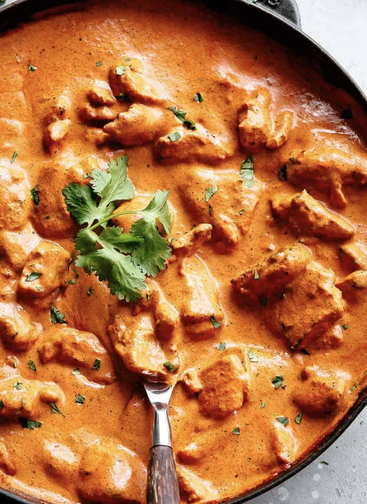

Butter Chicken

Description:
Serves 4 - 6
Time to Table: ~ 30 mins
BUTTER! BUTTER! BUTTER!
DAIRY ALLERGIES BEWARE
This classic North Indian dish is coming at ya with the power of delicious fatty b-u-t-t-e-r.
This recipe is keto-friendly but unfortunately for any strict herbivores it is vegan-unfriendly.
(You are welcome to make a vegan version of this dish, but I cannot guarantee the quality of the end product will be desirable. A vegetarian version of this dish will pair best with paneer as the chicken replacement.)
This dish features marinated chicken added to a tomato and dairy heavy sauce, enriched by delicious and aromatic spices. The recipe on this page assumes the chicken has already been cooked, so find my recommended method of cooking here.
Traditonally this dish is served alongside long grain rice and naan, but eat it how you like. I won't judge if you eat it straight out of the pot. It tastes better over time but please enjoy or freeze within 5 days for safest results.
Equipment Required
- stovetop
- stock pot or XL skillet
- wooden spoon
- knife and cutting board (unless buying pre-diced ingredients)
Ingredients
- 4 lbs pre-cooked diced chicken (suggested recipe found here.)
- 3 sticks butter (1 + 2 sticks, divided)
- 1 - 2 large sweet onions
- 3 - 5 cloves garlic
- 2 cups heavy whipping cream
- 16 oz can of tomato sauce
- 2 tbsp garam masala (recipe to make your own here.)
- 1 tbs cumin
- 1 tbsp tumeric
- 1 tbsp fresh or ground ginger
- 1 tsp ground pepper
- 1 tsp cayanne pepper
- 1 tsp kosher salt
Steps
- Dice your onions and garlic. If using fresh garlic, dice at this time. Set to the side.
- Cut butter into pats.
- Heat an extra large skillet (or pot) to medium heat.
- Add 1 stick of butter and melt.
- Toss in onions and increase heat to medium-high until onions begin to brown (for a more complex flavor, keep heat on medium and allow onions to caramelize, this will increase the recipe time by at least double).
- Add garlic, stir continuously for about one minute, or until fragrant. Be careful not to burn garlic.
- Add all seasonings (garam masala, cumin, tumeric, ginger, ground pepper, cayanne pepper, and salt). Stir until incorporated.
- Add remaining 2 sticks of butter and heat until melted. Stir frequently to encourage melting.
- Add heavy cream & tomato sauce. Stir to combine and bring to a simmer.
- Simmer for 10-15 minutes, stirring occasionally. Your sauce should thicken.
- Taste sauce, add any additional ingredients at this time if desired.
- Add pre-cooked chicken. Heat for an additional 10 minutes, or until internal temperature of chicken reaches at least 165°.
- Recommended to serve with rice and/or na'an. Will keep in fridge up to 5 days, but is best served warm. The sauce will thicken after it is cooled, and taste will get better the following day.